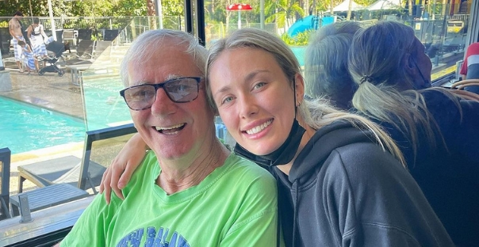
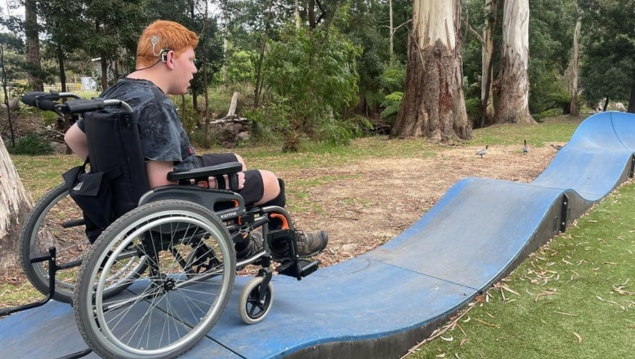
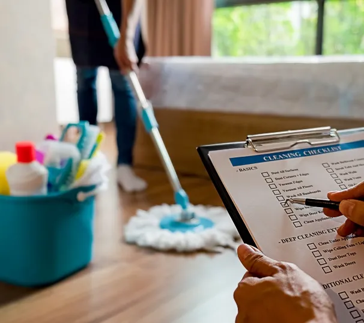
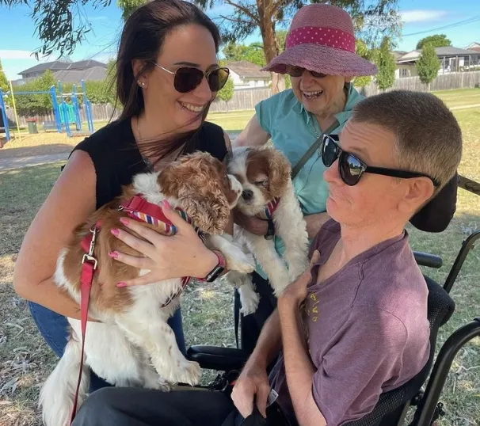
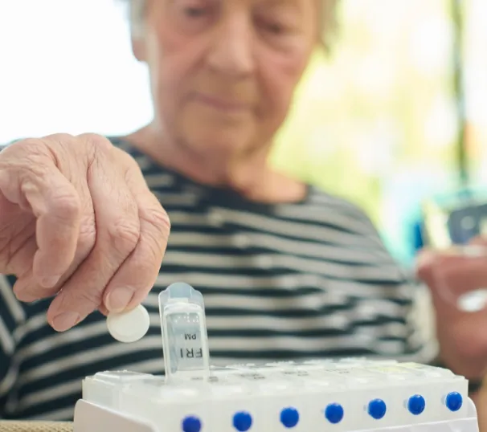
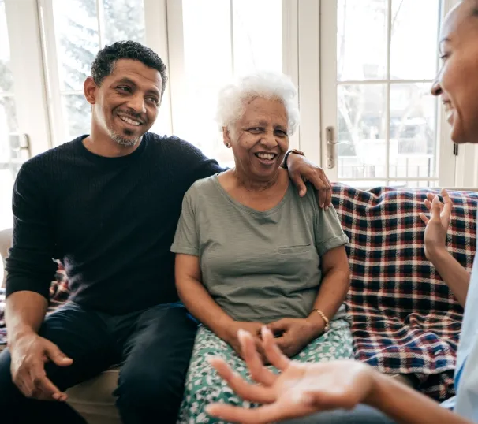

Service 01
Personal Care – All Ages
Offering compassionate, tailored personal care to individuals of all ages, ensuring daily living needs are met with respect and dignity.
View Full Detail →At Australian Care Agency, we are dedicated to providing exceptional Government Funded Home Care Services tailored to meet the unique needs of you or your loved one. Our team of highly trained support workers encourages independence, promotes dignity, and shares a deep passion for Making Lives Better every day.
As a proud, registered provider with both NDIS and TAC, we are committed to delivering the highest standards of care and assistance.

Maggie Belford, Founder

Impacts people’s lives by making a difference every day. Australian Care Agency focuses on providing a full range of services to ensure our clients remain independent in their own homes and within the community.
View All Care Services
Offering compassionate, tailored personal care to individuals of all ages, ensuring daily living needs are met with respect and dignity.
View Full Detail →
Providing reliable help around the home including cleaning, laundry, and maintenance tasks to support independence and comfort.
View Full Detail →Assisting with meal planning, grocery shopping, and preparation of nutritious meals, tailored to dietary needs and preferences.
View Full Detail →Facilitating access to safe and reliable transportation for appointments, social events, and other travel needs to promote connectivity and freedom.
View Full Detail →Helping clients engage with their local community through assisted outings, promoting social interaction and community involvement.
View Full Detail →Offering empathetic support and companionship to address emotional well-being and foster a sense of security and happiness.
View Full Detail →
Providing friendly and engaging companionship to alleviate loneliness and enhance quality of life through shared activities and conversations.
View Full Detail →
Ensuring correct medication management through reminders, supervision, and assistance with taking prescribed medications correctly and on time.
View Full Detail →
Providing temporary relief for primary caregivers with dedicated care services, allowing for personal time while ensuring loved ones are cared for.
View Full Detail →
Offering around-the-clock care services to meet the needs of clients requiring continuous support, ensuring safety and well-being at all times.
View Full Detail →We Are Always Here For You! Need Help? Contact Us
0411 426 496
maggie@australiancareagency.com.au
Our goal is to ensure the highest level of well-being, safety, and quality of life for our participants.
“The team at Australian Care Agency is attentive and always responsive to our questions and concerns. Outstanding service!”
Rachel S — NDIS Client
Australian Care Agency services offer a comprehensive range of support options tailored to meet the unique needs of individuals with disabilities. These services are designed to enhance well-being, promote independence, and ensure a high quality of life for participants at every stage of their journey.
View All FAQ’sAs an NDIS participant, you can access a wide range of support services, including personal care, community participation, assistive technologies, transport, and support coordination. Services are tailored to your individual needs and goals.
You may be eligible for TAC support if you’ve been injured in a transport accident in Victoria and require assistance with medical treatment, rehabilitation, or care services as part of your recovery.
To apply for NDIS funding, you need to check your eligibility through the NDIS website or by contacting the NDIS directly. Once eligible, you will need to complete an access request form and provide supporting evidence, such as medical reports.
Yes, in some cases, individuals who are eligible for both NDIS and TAC services can receive support from both programs. Your care plan will be coordinated to avoid overlap and ensure all your needs are met.
Both NDIS and TAC may fund necessary home modifications to improve accessibility and independence, such as installing ramps, modifying bathrooms, or widening doorways, depending on your individual needs and plan approval.
If you are not satisfied with your current NDIS provider, you can change providers by discussing your decision with your support coordinator or contacting the NDIS directly. You will need to review and update your service agreement with your new provider.
Medical treatment, rehabilitation services, disability services, income support, travel support and household support.